dynwavestate,dynwaveflux,lookuppotential,lookupstate¶
dynwave
Dynamic wave equation as state and flux.
state = dynwavestate(DynWaveProfileTable,
sectionID,
ldd,
prevState,
inflow,
bottomlevel,
roughness,
segmentlength,
nrtimeslices,
timestepinseconds,
constantState)
flux = dynwaveflux(DynWaveProfileTable,
sectionID,
ldd,
prevState,
inflow,
bottomlevel,
roughness,
segmentlength,
nrtimeslices,
timestepinseconds,
constantState);
potential = lookuppotential(DynWaveProfileTable,
sectionID,
bottomlevel,
segmentlength,
state)
state = lookupstate(DynWaveProfileTable,
sectionID,
bottomlevel,
segmentlength,
potential)
| Argument | Type | [Units] Remarks |
|---|---|---|
| DynWaveProfileTable | ascii table | chanel profile table, described in text below |
| sectionID | spatial, nominal, | section IDs of the channels |
| ldd | spatial, ldd | |
| prevState | scalar, spatial | initial state (state of the previous timestep) [m3] |
| inflow | scalar, spatial | lateral inflow into the channel segment [m3/channellength/sec] |
| bottomLevel | scalar, spatial | bottom levels of channel segments [m] |
| roughnes | scalar, spatial |
|
| segmentlength | scalar, spatial | actual length of the river segment [m] |
| nrtimeslices | scalar, spatial non-spatial | number of timeslices in dynwave iterator. The value at the pit defines the nrtimeslices for its whole catchment. |
| timestepinseconds | non-spatial scalar | length of the pcraster timestep [sec] |
| constantState | boolean,spatial non-spatial | keep the state constant in the locations which are ‘True’. This allows for defining constant heads (translated in states) at outlet points. |
| state | scalar, spatial | [m3] |
| flux | scalar, spatial | [m3] |
Global options:
The algortithm is influenced by the options --manning (default) or --chezy, to select the dynamic flow equation (see below for these equations).
Operation¶
The dynamic wave is a hydraulic routing function that calculates flows through the channel network as a function of water level slope, channel profile and channel roughness characteristics (as opposed to kinematic routing, which takes channel bottom slope as an approximation of water level slope). For a detailed discussion of the dynamic wave is referred to the hydrology and hydraulics handbooks (e.g. Chow), here it is assumed that the concepts of the dynamic wave are known.
In hydrology, we commonly do not deal with the state of water (the amount of water) in any given cell in a given timestep, but instead we deal with water levels or water depths. Water levels are the driving forces of the dynamic wave, but for a correct water massbalance, water levels have to be converted to water levels (potentials) and vice-versa. The relation between water levels and water amounts is determined by the channel profile and section length.
This description of the channel profile is stored in a DynWaveProfileTable. The profile table is an ASCII-formatted table, with each line listing (in this order):
- cross section ID
- water depth [m]
- cross section [m2]
- wetted perimeter [m]
Note that the DynWaveProfileTable lists water depth above bottomlevel, and bottomlevel itself is no part of the DynWaveTable.
Example DynWaveProfileTable:
1 0 0 0.0
1 1 1 2.82842712475
1 2 4 5.65685424949
1 3 9 8.48528137424
1 4 16 11.313708499
1 5 25 14.1421356237
1 6 36 16.9705627485
….
2 0 0 0.0
2 1 1 2.82842712475
2 2 4 5.65685424949
2 3 9 8.48528137424
2 4 16 11.313708499
2 5 25 14.1421356237
2 6 36 16.9705627485
…
The conversion between water level (a potential) and water state (an amount) is performed with the functions lookuppotential and lookupstate.
The dynamic wave is in PCRaster solved as an iterative process. This process is defined by the number of iterations (nrtimeslices) and the length of one PCRaster timestep. The number of iterations is a positive integer, and defines the internal iterations for the dynamic wave. Because PCRaster does not explicitly defines the length of the timestep and the units of the time parameters. For the solving the dynamic wave, this information is necessary, so the length of the PCRaster timestep has to be defined in the dynamic wave functions.
The current implementation of the dynamic wave function in PCRaster is not a complete dynamic wave formulation according to the summary of the Saint Venant equations as discussed by Ven Te Chow. The implementation currently consists of the friction force term, the gravity force term and the pressure force term and should therefore be correctly characterised as a diffusion wave formulation. The equations are solved as an explicit, finite forward-difference scheme. A straightforward iteration using an Euler solution scheme is used to solve these equations. These characteristics can not guarantee a stable solution (if the number of iterations is choosen too low, results may show oscillations), but are relatively fast and can be used to maintain a closed water balance.
Pits are considered by the dynamic wave as a closed boundary. Pits will thus act as a ‘storage of water’, meaning water will enter the pit cell through the fluxes from upstream cells, but no outflow from the pit is defined and the water remains in the pit. Over time, the pit thus accumulates water, and this water will eventually build a high enough potential to prevent other water from flowing into the cell.
In reality, two types of boundary conditions can be defined. The one boundary condition is a constant flow boundary condition, the other is a constant head boundary. Both boundary conditions can be implemented in the dynwave as follows.
Constant flow boundary condition in pits¶
A straightforward implementation of a constant flow boundary in the dynamic wave is to explicitly extract this flow from the pit. Model code implementing this behavior is:
binding
constantOutflow = ….;
dynamic
state,flux = dynwavestate,dynwaveflux(DynWaveProfileTable,
sectionID,
lddMap,
prevState,
inflow,
bottomlevel,
roughness,
segmentlength,
10,
1000,
0);
# Find the pit and subtract a constant value from state
prevState = if(pit(lddmap) ne 0 then state - constantOutflow else state);
Constant head boundary condition in pits¶
A straightforward implementation of a constant head boundary in the dynamic wave is to explicitly set the pit to this head, using the function lookupstate to go from a head to a state. Model code implementing this behavior is:
binding
constantHead = ….;
dynamic
state,flux = dynwavestate,dynwaveflux(DynWaveProfileTable,
sectionID,
lddMap,
prevState,
inflow,
bottomlevel,
roughness,
segmentlength,
10,
timeinsecs,
constantHead);
# Find the pit and subtract a constant value from state
prevState = if(pit(lddmap) ne 0 then lookupstate(DynWaveProfileTable,
sectionID,
bottomlevel,
segmentlength,
potential)
else state);
Examples¶
- • pcrcalc#! –manningbindingState2Manning = State2Manning.map;Flux2Manning = Flux2Manning.map;Table = Table.txt;ProfileId2 = ProfileId2.map;Ldd = Ldd.map;OldState2 = OldState2.map;initialreport State2Manning, Flux2Manning = dynwavestate,dynwaveflux(Table,ProfileId2, # with a MVLdd,OldState2,0,# inflow0,# bottomLevel0.1,# roughness1,# segmentLength10,# nrTimeSlices1, # timestepInSecs0 # constantState);• pythonsetglobaloption(“manning”)Table = “Table.txt”ProfileId2 = readmap(“ProfileId2.map”)Ldd = readmap(“Ldd.map”)OldState2 = readmap(“OldState2.map”)State2Manning = dynwavestate(Table,ProfileId2, # with a MVLdd,OldState2,0,# inflow0,# bottomLevel0.1,# roughness1,# segmentLength10,# nrTimeSlices1, # timestepInSecs0 # constantState)Flux2Manning = dynwaveflux(Table,ProfileId2, # with a MVLdd,OldState2,0,# inflow0,# bottomLevel0.1,# roughness1,# segmentLength10,# nrTimeSlices1, # timestepInSecs0 # constantState)
State2Manning.map Flux2Manning.map Table.txt ProfileId2.map Ldd.map OldState2.map 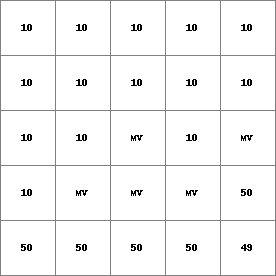 
14 0 0 0.0 14 1 1 2.82842712475 14 2 4 5.65685424949 14 3 9 8.48528137424 14 4 16 11.313708499 14 5 25 14.1421356237 14 6 36 16.9705627485 ..................... 14 996 992016 2817.11341625 14 997 994009 2819.94184337 14 998 996004 2822.7702705 14 999 998001 2825.59869762
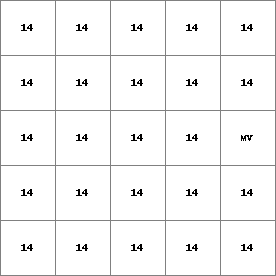 
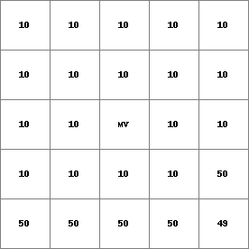 - • pcrcalc#! –chezybindingState2Chezy = State2Chezy.map;Flux2Chezy = Flux2Chezy.map;Table = Table.txt;ProfileId2 = ProfileId2.map;Ldd = Ldd.map;OldState2 = OldState2.map;initialreport State2Chezy, Flux2Chezy = dynwavestate,dynwaveflux(Table,ProfileId2, # with a MVLdd,OldState2,0,# inflow0,# bottomLevel0.1,# roughness1,# segmentLength10,# nrTimeSlices1, # timestepInSecs0 # constantState);• pythonsetglobaloption(“chezy”)Table = “Table.txt”ProfileId2 = readmap(“ProfileId2.map”)Ldd = readmap(“Ldd.map”)OldState2 = readmap(“OldState2.map”)State2Chezy=dynwavestate(Table,ProfileId2, # with a MVLdd,OldState2,0,# inflow0,# bottomLevel0.1,# roughness1,# segmentLength10,# nrTimeSlices1, # timestepInSecs0 # constantState)Flux2Chezy=dynwaveflux(Table,ProfileId2, # with a MVLdd,OldState2,0,# inflow0,# bottomLevel0.1,# roughness1,# segmentLength10,# nrTimeSlices1, # timestepInSecs0 # constantState)
State2Chezy.map Flux2Chezy.map Table.txt ProfileId2.map Ldd.map OldState2.map 
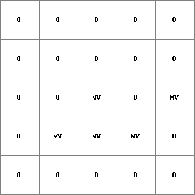 14 0 0 0.0 14 1 1 2.82842712475 14 2 4 5.65685424949 14 3 9 8.48528137424 14 4 16 11.313708499 14 5 25 14.1421356237 14 6 36 16.9705627485 ..................... 14 996 992016 2817.11341625 14 997 994009 2819.94184337 14 998 996004 2822.7702705 14 999 998001 2825.59869762
- • pcrcalc#! –manningbindingStateManning = StateManning.map;FluxManning = FluxManning.map;Table = Table.txt;Ldd = Ldd.map;Material = Material.map;initialreport StateManning, FluxManning = dynwavestate,dynwaveflux(Table,14,# profileIdLdd,Material, # oldState0,# inflow0,# bottomLevel0.1,# roughness1,# segmentLength10,# nrTimeSlices1, # timestepInSecs0 # constantState);• pythonsetglobaloption(“manning”)Table = “Table.txt”Ldd = readmap(“Ldd.map”)Material = readmap(“Material.map”)StateManning = dynwavestate(Table,14,# profileIdLdd,Material, # oldState0,# inflow0,# bottomLevel0.1,# roughness1,# segmentLength10,# nrTimeSlices1, # timestepInSecs0 # constantState)FluxManning = dynwaveflux(Table,14,# profileIdLdd,Material, # oldState0,# inflow0,# bottomLevel0.1,# roughness1,# segmentLength10,# nrTimeSlices1, # timestepInSecs0 # constantState)
StateManning.map FluxManning.map Table.txt Ldd.map Material.map 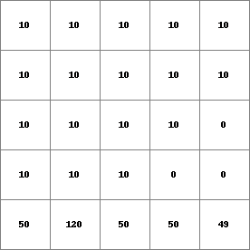 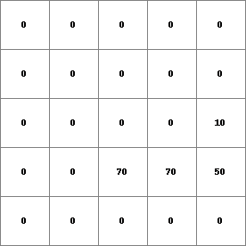 14 0 0 0.0 14 1 1 2.82842712475 14 2 4 5.65685424949 14 3 9 8.48528137424 14 4 16 11.313708499 14 5 25 14.1421356237 14 6 36 16.9705627485 ..................... 14 996 992016 2817.11341625 14 997 994009 2819.94184337 14 998 996004 2822.7702705 14 999 998001 2825.59869762

- • pcrcalc#! –chezybindingState3Chezy = State3Chezy.map;Flux3Chezy = Flux3Chezy.map;Table = Table.txt;Ldd = Ldd.map;OldState3 = OldState3.map;initialreport State3Chezy, Flux3Chezy = dynwavestate,dynwaveflux(Table,14,# profileIdLdd,OldState3,0,# inflow0,# bottomLevel0.1,# roughness1,# segmentLength10,# nrTimeSlices1, # timestepInSecs0 # constantState);• pythonsetglobaloption(“chezy”)Table = “Table.txt”Ldd = readmap(“Ldd.map”)OldState3 = readmap(“OldState3.map”)State3Chezy = dynwavestate(Table,14,# profileIdLdd,OldState3,0,# inflow0,# bottomLevel0.1,# roughness1,# segmentLength10,# nrTimeSlices1, # timestepInSecs0 # constantState)Flux3Chezy = dynwaveflux(Table,14,# profileIdLdd,OldState3,0,# inflow0,# bottomLevel0.1,# roughness1,# segmentLength10,# nrTimeSlices1, # timestepInSecs0 # constantState)
State3Chezy.map Flux3Chezy.map Table.txt Ldd.map OldState3.map 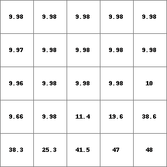 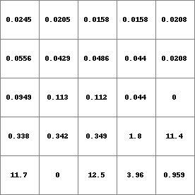 14 0 0 0.0 14 1 1 2.82842712475 14 2 4 5.65685424949 14 3 9 8.48528137424 14 4 16 11.313708499 14 5 25 14.1421356237 14 6 36 16.9705627485 ..................... 14 996 992016 2817.11341625 14 997 994009 2819.94184337 14 998 996004 2822.7702705 14 999 998001 2825.59869762
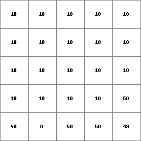 - • pcrcalc#! –chezybindingStateChezy = StateChezy.map;FluxChezy = FluxChezy.map;Table = Table.txt;Ldd = Ldd.map;Material = Material.map;initialreport StateChezy, FluxChezy = dynwavestate,dynwaveflux(Table,14, # profileIdLdd,Material, # oldState0, # inflow0, # bottomLevel0.1, # roughness1,# segmentLength10,# nrTimeSlices1, # timestepInSecs0 # constantState);• pythonsetglobaloption(“chezy”)Table = “Table.txt”Ldd = readmap(“Ldd.map”)Material = readmap(“Material.map”)StateChezy = dynwavestate(Table,14, # profileIdLdd,Material, # oldState0, # inflow0, # bottomLevel0.1, # roughness1,# segmentLength10,# nrTimeSlices1, # timestepInSecs0 # constantState)FluxChezy = dynwaveflux(Table,14, # profileIdLdd,Material, # oldState0, # inflow0, # bottomLevel0.1, # roughness1,# segmentLength10,# nrTimeSlices1, # timestepInSecs0 # constantState)
StateChezy.map FluxChezy.map Table.txt Ldd.map Material.map 
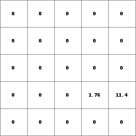 14 0 0 0.0 14 1 1 2.82842712475 14 2 4 5.65685424949 14 3 9 8.48528137424 14 4 16 11.313708499 14 5 25 14.1421356237 14 6 36 16.9705627485 ..................... 14 996 992016 2817.11341625 14 997 994009 2819.94184337 14 998 996004 2822.7702705 14 999 998001 2825.59869762
- • pcrcalc#! –manningbindingState3Manning = State3Manning.map;Flux3Manning = Flux3Manning.map;Table = Table.txt;Ldd = Ldd.map;OldState3 = OldState3.map;initialreport State3Manning, Flux3Manning = dynwavestate,dynwaveflux(Table,14,# profileIdLdd,OldState3,0,# inflow0,# bottomLevel0.1,# roughness1,# segmentLength10,# nrTimeSlices1, # timestepInSecs0 # constantState);• pythonsetglobaloption(“manning”)Table = “Table.txt”Ldd = readmap(“Ldd.map”)OldState3 = readmap(“OldState3.map”)State3Manning = dynwavestate(Table,14,# profileIdLdd,OldState3,0,# inflow0,# bottomLevel0.1,# roughness1,# segmentLength10,# nrTimeSlices1, # timestepInSecs0 # constantState)Flux3Manning = dynwaveflux(Table,14,# profileIdLdd,OldState3,0,# inflow0,# bottomLevel0.1,# roughness1,# segmentLength10,# nrTimeSlices1, # timestepInSecs0 # constantState)
State3Manning.map Flux3Manning.map Table.txt Ldd.map OldState3.map 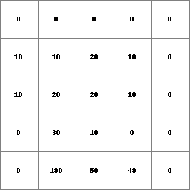 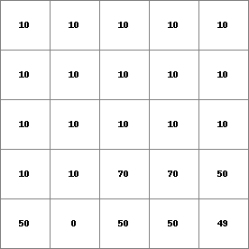 14 0 0 0.0 14 1 1 2.82842712475 14 2 4 5.65685424949 14 3 9 8.48528137424 14 4 16 11.313708499 14 5 25 14.1421356237 14 6 36 16.9705627485 ..................... 14 996 992016 2817.11341625 14 997 994009 2819.94184337 14 998 996004 2822.7702705 14 999 998001 2825.59869762